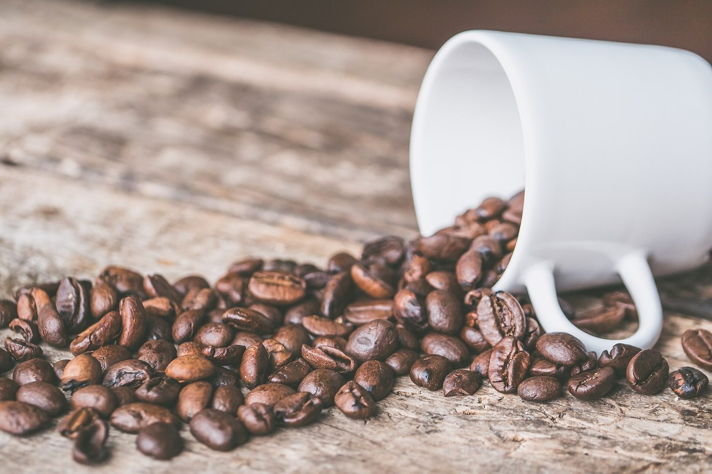

店のこと
確認できていること
現時点で確認できているのは、所在地とInstagramのアカウントだけです。それ以外は準備中として、憶測では書いていません。


図の見かた
蒸し器は、ページの目印
トップページの図は、上から つまみ・蓋・蒸し段・蒸し板・湯釜 と重ね、左右の取っ手まで入れて六つの部位に分けたものです。制作側の連想で、お店の理念・由来とは無関係です。
- 1つまみ蓋の頂上についている、持ち上げるための小さな持ち手。
- 2蓋上から全体をおおって、湯気を中にとどめる丸い蓋。
- 3蒸し段底に穴のあいた、材料を入れる中ほどの段。
- 4蒸し板湯気を通すために細かい穴を並べた、仕切りの板。
- 5湯釜いちばん下の、水や湯を入れて火にかける深い鍋。
- 6取っ手熱い器具を持ち運ぶために、鍋の左右につける持ち手。
ギャラリー(イメージ)
カップとパンの写真



写真はフリー素材のイメージです。お店のものではありません。